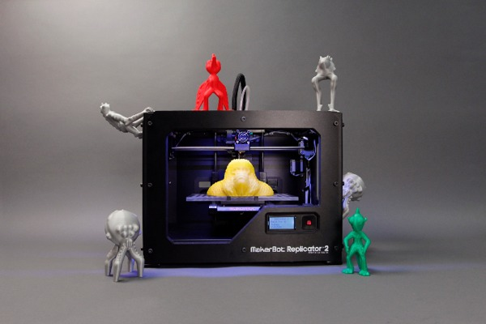

Stampa 3DSecondo Barack Obama, la stampa in 3D ha le potenzialita' per rivoluzionare qualsiasi cosa facciamo. Compreso, concordano gli esperti , il modo di lavorare.Ecco quali sono le dieci professioni emergenti che beneficieranno dello sviluppo della nuova tecnologia. Innazitutto, la stampa 3D ha bisogno di designer in grado di trasformare l’idea di un prodotto in un prototipo tridimensionale. Siccome la stampa 3D sarà utilizzata in una molteplicità di settori, i designer non solo devono sapere come funziona la stampa 3D, ma essere sempre aggiornati sulle modalità con cui le aziende utilizzano la nuova tecnologia. Nuove posizioni si apriranno anche per gli esperti Cad applicato al design in 3D. Si tratta di una figura professionale in grado di trasformare il design di un prodotto in un progetto digitale per la nuova generazione di stampanti. Saranno sempre più richiesti modellatori Cad esperti di 3D, con competenze relative a vincoli geometrici, dimensioni caratteristiche e conoscenza dei materiali. La stampa 3D, inoltre, avrà un grande successo nell’ambito della tecnologia da indossare – scarpe, accessori, abiti – e saranno soprattutto la moda e il design dei gioielli a trarre vantaggio da queste innovazioni. E’ dunque possibile che si apriranno posizioni per chi opera nella ricerca e sviluppo, a cavallo fra tecnologia e prodotti finiti per il consumatore. Il futuro è roseo anche per specialisti in modellismo in ambito biologico e scientifico. Il settore medicale, infatti, sarà interessato dalla stampa in 3D soprattutto in relazione alle protesi ai tessuti umani . Saranno richiesti, dunque, ingegneri, designer, modellatori con un background in ambito scientifico e medicale per la produzione di 3D avanzati. La stampa 3D avrà un impatto molto importante su architettura e costruzioni. L’avvento della nuova tecnologia, dunque, rendera' sempre più indispensabili professionisti in grado di tradurre progetti in 2D in modelli in 3D. Anche la formazione sara' interessata dall’arrivo del 3D, perché serviranno sempre di più professori ed esperti in grado di insegnare aspetti tecnici e di business della stampa 3D. Avvocati ed esperti in ambito legale saranno chiamati in causa per gestire diritti e proprietà intellettuali legati alla nuova tecnologia che renderà più facile creare prodotti o parti di prodotti pirata o modificati. In campo imprenditoriale si apriranno delle opportunità per chi vuole offrire servizi e personalizzazione nella stampa 3D. Il prezzo delle stampanti, compreso in media fra duemila e quattromila dollari, E' perfettamente accessibile e chiunque abbia una conoscenza della stampa 3D può iniziare un business di stampa fisico o via web. Per chi preferisce avere alle spalle una struttura, inizia a prendere corpo l’ipotesi del franchising: secondo Forbes , Ups ha appena lanciato un progetto pilota per intercettare i bisogni di stampa 3D, attraverso lo sviluppo di una catena in franchising che potrebbe soddisfare le esigenze dei clienti locali. Infine, anche l’ambito amministrativo e gestionale sarà interessato dalla stampa 3D, perché la crescita del business richiederà professionisti della contabilità, delle vendite, della comunicazione, in grado di occuparsi del business dietro le quinte. |